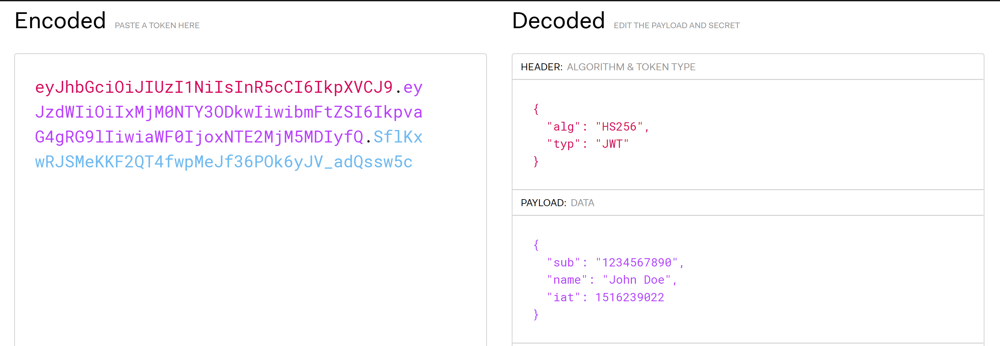

| Authentication | Authorization |
|---|---|
| Determines whether users are who they claim to be | Determines what users can and cannot access |
| Challenges the user to validate credentials (for example, through passwords) | Verifies whether access is allowed through policies and rules |
| Usually done before authorization | Usually done after successful authentication |
A JWT is the acronym for JSON Web Token. A JWT can look something like this.
// The header
eyJhbGciOiJIUzI1NiIsInR5cCI6IkpXVCJ9.
// The payload
eyJpZCI6IjMiLCJuYmYiOjE2NTQyNjI1MzgsImV4cCI6MTY1NDI2MjU5OCwiaWF0IjoxNjU0MjYyNTM4fQ.
// The signature
fNcXKNiYCu5AI22vIjyBEnRAiYitrHhjdB9MnNpZGCk
Pretty much anything! However, JWT's can be read by anyone, so keep the information non-personal.
The secret signature is what will keep your resources (e.g. API) secure!